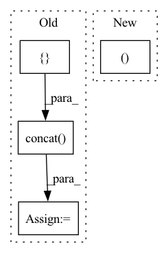

Pattern ID :22476
Before Change
hiddens2 = None
lstm_last, hiddens1 = self.lstm(x, hiddens1)
lstm2_last, hiddens2 = self.lstm2(x, hiddens2)
concat_lstm = torch.concat([ lstm_last, lstm2_last, dim=-1)
logits = self.linear(concat_lstm)
loss = self.loss_func(logits, y)
self.log("train_loss", loss, sync_dist=(self.device != "cpu"))
// look this discussion for tbptt experiment (https://github.com/Lightning-AI/lightning/discussions/15643)After Change
// training_step is needed 2 step for 1 batch (1 step: 0~99, 2 step: 100~199)
// very cleverly, we just using hiddens parameter, lightning"s tbptt not connected new batch"s hiddens to past one
x, y = batch
logits, hiddens1, hiddens2 = self(x, hiddens)
loss = self.loss_func(logits, y)
self.log("train_loss", loss, sync_dist=(self.device != "cpu"))
// look this discussion for tbptt experiment (https://github.com/Lightning-AI/lightning/discussions/15643)In pattern: SUPERPATTERN
Frequency: 4
Non-data size: 4
Instances Fragment ID: 71029311
Project Name: yoosunghyun/pytorch-lightning-template
Commit Name: e31ba2930352623556b022885ef2cb269370c975
Time: 2022-12-04
Author: shyu0522@hanmail.net
File Name: rnn_model.py
M Class Name: LSTMModel
N Class Name: LSTMModel
M Method Name: training_step(4)
N Method Name: training_step(4)
M Parent Class: LightningModule
N Parent Class: LightningModule
M File Name: rnn_model.py
N File Name: rnn_model.py
M Start Line: 34
M End Line: 42
N Start Line: 60
N End Line: 60
Before Change
senders, receivers = common.triangles_to_edges(inputs["cells"])
relative_mesh_pos = (tf.gather(inputs["mesh_pos"], senders) -
tf.gather(inputs["mesh_pos"], receivers))
edge_features = tf.concat([
relative_mesh_pos,
tf.norm(relative_mesh_pos, axis=-1, keepdims=True), axis=-1)
mesh_edges = core_model.EdgeSet(
name="mesh_edges",
features=self._edge_normalizer(edge_features, is_training),After Change
velocity = inputs["velocity"]
node_type = F.one_hot(node_type[:, 0].to(torch.int64), common.NodeType.SIZE)
node_features = torch.cat((velocity, node_type ), dim=-1)
senders, receivers = common.triangles_to_edges(inputs["cells"])
mesh_pos = inputs["mesh_pos"] Fragment ID: 71029315
Project Name: wwmark/meshgraphnets
Commit Name: 1ad048efb0f606f799674edb4d16a0554e54bf28
Time: 2021-10-24
Author: ruoheng.ma@gmail.com
File Name: cfd_model.py
M Class Name: Model
N Class Name: Model
M Method Name: _build_graph(3)
N Method Name: _build_graph(3)
M Parent Class: nn.Module
N Parent Class: snt.AbstractModule
M File Name: cfd_model.py
N File Name: cfd_model.py
M Start Line: 44
M End Line: 53
N Start Line: 63
N End Line: 75
Before Change
with tf.variable_scope("Fast-RCNN"):
with tf.variable_scope("rois_pooling"):
roi_features_list = []
for level_name, rois in zip(self.cfgs.LEVEL, rois_list): // exclude P6_rois
// if mode == 0:
roi_features = roi_extractor.roi_align(feature_maps=feature_pyramid[level_name],
rois=rois, img_shape=img_shape,
scope=level_name)
// else:
// raise Exception("only support roi align (mode=0)")
roi_features_list.append(roi_features)
all_roi_features = tf.concat( roi_features_list, axis=0) // [minibatch_size, H, W, C]
with tf.variable_scope("build_fc_layers"):
inputs = slim.flatten(inputs=all_roi_features, scope="flatten_inputs")After Change
cls_score_r = tf.reshape(cls_score_r, [-1, self.cfgs.CLASS_NUM + 1])
bbox_pred_r = tf.reshape(bbox_pred_r, [-1, 5 * (self.cfgs.CLASS_NUM + 1)])
return bbox_pred_h, cls_score_h, bbox_pred_r, cls_score_r Fragment ID: 71029313
Project Name: yangxue0827/rotationdetection
Commit Name: a1a748ef567969afbb9ac4cd216d41995669829e
Time: 2020-11-03
Author: yangxue0827@126.com
File Name: libs/models/box_heads/box_head_base.py
M Class Name: BoxHead
N Class Name: BoxHead
M Method Name: fc_head(7)
N Method Name: fc_head(7)
M Parent Class: object
N Parent Class: object
M File Name: libs/models/box_heads/box_head_base.py
N File Name: libs/models/box_heads/box_head_base.py
M Start Line: 17
M End Line: 51
N Start Line: 59
N End Line: 108
Before Change
y = iris_clean.target
x_train, x_test, y_train, y_test = train_test_split(x, y, test_size=0.5, random_state=55)
clf.fit(x_train, y_train)
ds = Dataset(pd.concat([ x_test, y_test, axis=1) ,
features=iris_clean.feature_names,
label="target")
y_pred_train, y_pred_test, y_proba_train, y_proba_test = _dummify_model(ds, None, clf)After Change
// copied from roc_report_test
def test_roc_condition_ratio_more_than_passed(iris_split_dataset_and_model):
ds, _, clf = iris_split_dataset_and_model
y_pred_train, y_pred_test, y_proba_train, y_proba_test = _dummify_model(ds, None, clf)
check = RocReport().add_condition_auc_greater_than() Fragment ID: 71029312
Project Name: deepchecks/deepchecks
Commit Name: 5a724e40822988dbc1da59c3b2cbf6b1bb6ffb40
Time: 2022-10-03
Author: noamzbr@gmail.com
File Name: tests/tabular/test_dummy_model.py
M Class Name: AnonimousClass
N Class Name: AnonimousClass
M Method Name: test_roc_condition_ratio_more_than_passed(1)
N Method Name: test_roc_condition_ratio_more_than_passed(1)
M Parent Class:
N Parent Class:
M File Name: tests/tabular/test_dummy_model.py
N File Name: tests/tabular/test_dummy_model.py
M Start Line: 50
M End Line: 57
N Start Line: 52
N End Line: 52